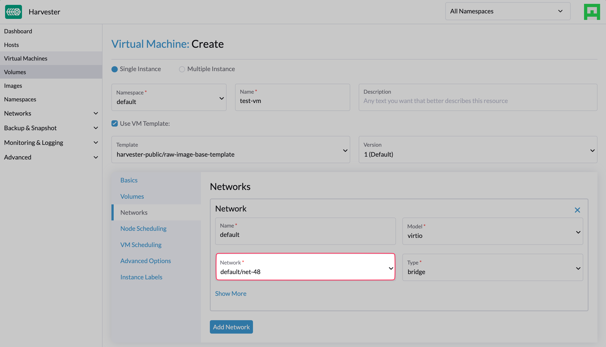

|
本文档采用自动化机器翻译技术翻译。 尽管我们力求提供准确的译文，但不对翻译内容的完整性、准确性或可靠性作出任何保证。 若出现任何内容不一致情况，请以原始 英文 版本为准，且原始英文版本为权威文本。 |
VM DHCP 控制器（实验性）
|
harvester-vm-dhcp-controller 是一个 实验性 附加产品。它不包含在 ISO 中，但您可以从 |
您可以使用嵌入式的托管 DHCP 功能配置 IP 池信息，并为运行在 SUSE Virtualization 集群上的虚拟机提供 IP 地址。此功能是独立 DHCP 服务器的替代方案，使用 vm-dhcp-controller 附加产品以简化来宾集群的部署。
|
SUSE Virtualization 使用计划的基础设施网络，因此您必须确保网络连接可用，并提前规划 IP 池。 |
独特功能
-
DHCP 租约存储在 etcd 中，作为整个集群的单一真实来源。
-
每个租约本质上是静态的，并且与您当前的网络基础设施良好兼容。
-
即使集群的控制平面停止工作，托管 DHCP 代理仍然可以为现有实体提供 DHCP 请求，确保您的虚拟机工作负载的网络保持可用。
局限性
-
托管 DHCP 功能仅适用于
VirtualMachineCRs 中指定的网络接口。在虚拟机中创建的网络接口不受支持。 -
在创建虚拟机后添加或删除网络接口时，不会分配或取消分配 IP 地址。实际的 MAC 地址记录在
VirtualMachineNetworkConfigCRs 中。 -
当前不支持 DHCP RELEASE 操作。
-
IP 池配置更新仅在您手动重启相关代理 Pod 后生效。
安装和启用附加产品
您可以通过运行以下命令来安装附加产品：
kubectl apply -f https://raw.githubusercontent.com/harvester/experimental-addons/main/harvester-vm-dhcp-controller/harvester-vm-dhcp-controller.yaml|
该附加产品无法动态检测特定于集群的服务 CIDR，默认使用 当您的集群使用不同的服务CIDR时，您必须在`valuesContent`部分的`Addon` CR中显式配置它以防止出现问题。具体来说，当CIDR与默认的`10.53.0.0/16`服务CIDR重叠时，创建IP池资源（IPPools）的尝试可能会失败。 示例： 您可以使用以下命令检查集群的服务CIDR： |
安装后，在*仪表板*屏幕的SUSE Virtualization UI 上或使用命令行工具 kubectl 启用附加产品。

使用附加产品
-
在UI的*仪表板*屏幕上，创建一个虚拟机网络。

-
使用命令行工具kubectl创建一个`IPPool`对象。
cat <<EOF | kubectl apply -f - apiVersion: network.harvesterhci.io/v1alpha1 kind: IPPool metadata: name: net-48 namespace: default spec: ipv4Config: serverIP: 192.168.48.77 cidr: 192.168.48.0/24 pool: start: 192.168.48.81 end: 192.168.48.90 exclude: - 192.168.48.81 - 192.168.48.90 router: 192.168.48.1 dns: - 1.1.1.1 leaseTime: 300 networkName: default/net-48 EOF -
创建一个虚拟机，该虚拟机连接到您之前创建的虚拟机网络。

-
等待相应的`VirtualMachineNetworkConfig`对象被创建，并将虚拟机网络接口的MAC地址应用于该对象。
-
检查`IPPool`和`VirtualMachineNetworkConfig`对象的`.status`字段，并验证IP地址是否已分配并分配给MAC 地址。
$ kubectl get ippools.network net-48 -o yaml apiVersion: network.harvesterhci.io/v1alpha1 kind: IPPool metadata: creationTimestamp: "2024-02-15T13:17:21Z" finalizers: - wrangler.cattle.io/vm-dhcp-ippool-controller generation: 1 name: net-48 namespace: default resourceVersion: "826813" uid: 5efd44b7-3796-4f02-947e-3949cb4c8e3d spec: ipv4Config: cidr: 192.168.48.0/24 dns: - 1.1.1.1 leaseTime: 300 pool: end: 192.168.48.90 exclude: - 192.168.48.81 - 192.168.48.90 start: 192.168.48.81 router: 192.168.48.1 serverIP: 192.168.48.77 networkName: default/net-48 status: agentPodRef: name: default-net-48-agent namespace: harvester-system conditions: - lastUpdateTime: "2024-02-15T13:17:21Z" status: "True" type: Registered - lastUpdateTime: "2024-02-15T13:17:21Z" status: "True" type: CacheReady - lastUpdateTime: "2024-02-15T13:17:30Z" status: "True" type: AgentReady - lastUpdateTime: "2024-02-15T13:17:21Z" status: "False" type: Stopped ipv4: allocated: 192.168.48.81: EXCLUDED 192.168.48.84: ca:70:82:e6:84:6e 192.168.48.90: EXCLUDED available: 7 used: 1 lastUpdate: "2024-02-15T13:48:20Z"$ kubectl get virtualmachinenetworkconfigs.network test-vm -o yaml apiVersion: network.harvesterhci.io/v1alpha1 kind: VirtualMachineNetworkConfig metadata: creationTimestamp: "2024-02-15T13:48:02Z" finalizers: - wrangler.cattle.io/vm-dhcp-vmnetcfg-controller generation: 2 labels: harvesterhci.io/vmName: test-vm name: test-vm namespace: default ownerReferences: - apiVersion: kubevirt.io/v1 kind: VirtualMachine name: test-vm uid: a9f8ce12-fd6c-4bd2-b266-245d8e77dae3 resourceVersion: "826809" uid: 556440c7-eeeb-4daf-9c98-60ab39688ba8 spec: networkConfig: - macAddress: ca:70:82:e6:84:6e networkName: default/net-48 vmName: test-vm status: conditions: - lastUpdateTime: "2024-02-15T13:48:20Z" status: "True" type: Allocated - lastUpdateTime: "2024-02-15T13:48:02Z" status: "False" type: Disabled networkConfig: - allocatedIPAddress: 192.168.48.84 macAddress: ca:70:82:e6:84:6e networkName: default/net-48 state: Allocated -
检查虚拟机的串行控制台，并验证IP地址是否在网络接口上正确配置（通过DHCP）。

Pods和CRDs
当附加产品启用时，以下类型的Pods会运行：
-
控制器：协调CRD对象以确定IP和MAC地址之间的分配和映射。结果保存在`IPPool`对象中。
-
Webhook：在接收请求（创建、更新和删除）时验证和变更CRD对象。
-
代理：处理DHCP请求，并确保内部DHCP租约存储是最新的。这是通过同步代理关联的特定`IPPool`对象来完成的。代理在您创建新的
IPPool对象时按需生成。
该附加产品引入了以下新的 CRD：
-
IPPool(ippl) -
VirtualMachineNetworkConfig(vmnetcfg)
IPPool CRD
IPPool CRD 允许您定义 IP 池信息。您必须将每个 IPPool 对象映射到特定的 NetworkAttachmentDefinition (NAD) 对象，该对象必须事先创建。
|
在 SUSE Virtualization 生态系统中使用了多个名为 |
示例：
apiVersion: network.harvesterhci.io/v1alpha1
kind: IPPool
metadata:
name: example
namespace: default
spec:
ipv4Config:
serverIP: 192.168.100.2 # The DHCP server's IP address
cidr: 192.168.100.0/24 # The subnet information, must be in the CIDR form
pool:
start: 192.168.100.101
end: 192.168.100.200
exclude:
- 192.168.100.151
- 192.168.100.187
router: 192.168.100.1 # The default gateway, if any
dns:
- 1.1.1.1
domainName: example.com
domainSearch:
- example.com
ntp:
- pool.ntp.org
leaseTime: 300
networkName: default/example # The namespaced name of the NAD object在创建 IPPool 对象后，控制器协调过程将初始化 IP 分配模块，并为网络启动代理 pod。
$ kubectl get ippools.network example
NAME NETWORK AVAILABLE USED REGISTERED CACHEREADY AGENTREADY
example default/example 98 0 True True TrueVirtualMachineNetworkConfig CRD
VirtualMachineNetworkConfig CRD 类似于 IP 地址发放请求，并与 NetworkAttachmentDefinition (NAD) 对象相关联。
示例 VirtualMachineNetworkConfig 对象如下所示：
apiVersion: network.harvesterhci.io/v1alpha1
kind: VirtualMachineNetworkConfig
metadata:
name: test-vm
namespace: default
spec:
networkConfig:
- macAddress: 22:37:37:82:93:7d
networkName: default/example
vmName: test-vm在创建 VirtualMachineNetworkConfig 对象后，控制器尝试从 IP 分配模块中检索每个记录的 MAC 地址的未使用 IP 地址列表。然后在 VirtualMachineNetworkConfig 对象和相应的 IPPool 对象中更新 IP-MAC 映射。
|
在大多数情况下，手动为虚拟机创建 |